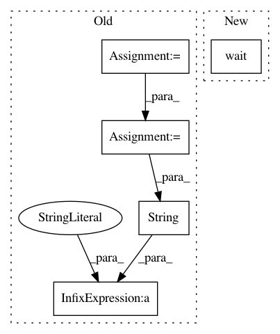

dd4ebd98a0026f626242f30cf9688d61b4798af1,mltsp/custom_feature_tools.py,,extract_feats_in_docker_container,#Any#Any#,434
Before Change
if str(stderr).strip() != "" and stderr != b"":
print("\n\ndocker container stderr:\n\n", str(stderr).strip(), "\n\n")
// Copy pickled results data from Docker container to host
cmd = ["docker", "cp",
"%s:/tmp/results_list_of_dict.pkl" % container_name,
path_to_tmp_dir]
status_code = call(cmd, stdout=PIPE, stderr=PIPE)
print("/tmp/results_list_of_dict.pkl", \
"copied to host machine - status code %s" % str(status_code))
// Load pickled results data
with open(os.path.join(path_to_tmp_dir, "results_list_of_dict.pkl"),
"rb") as f:
After Change
client.start(cont_id,
binds={cfg.PROJECT_PATH: {"bind": "/home/mltsp"}})
// Wait for process to complete
client.wait(cont_id)
stdout = client.logs(container=cont_id, stdout=True)
stderr = client.logs(container=cont_id, stderr=True)
if str(stderr).strip() != "" and stderr != b"":
print("\n\ndocker container stderr:\n\n", str(stderr).strip(), "\n\n")
In pattern: SUPERPATTERN
Frequency: 3
Non-data size: 5
Instances
Project Name: cesium-ml/cesium
Commit Name: dd4ebd98a0026f626242f30cf9688d61b4798af1
Time: 2015-02-27
Author: a.crellinquick@gmail.com
File Name: mltsp/custom_feature_tools.py
Class Name:
Method Name: extract_feats_in_docker_container
Project Name: ilastik/ilastik
Commit Name: aba96dc49c0a132eb6edc6505a69ad13e9a37e5d
Time: 2016-02-18
Author: janez.ales@iwr.uni-heidelberg.de
File Name: ilastik/applets/trackingFeatureExtraction/opTrackingFeatureExtraction.py
Class Name: OpTrackingFeatureExtraction
Method Name: execute
Project Name: ilastik/ilastik
Commit Name: 5aac7ca8dd64ac0bc1a4b74dafc1e45bc3f0034a
Time: 2016-02-18
Author: janez.ales@iwr.uni-heidelberg.de
File Name: ilastik/applets/trackingFeatureExtraction/opTrackingFeatureExtraction.py
Class Name: OpTrackingFeatureExtraction
Method Name: execute